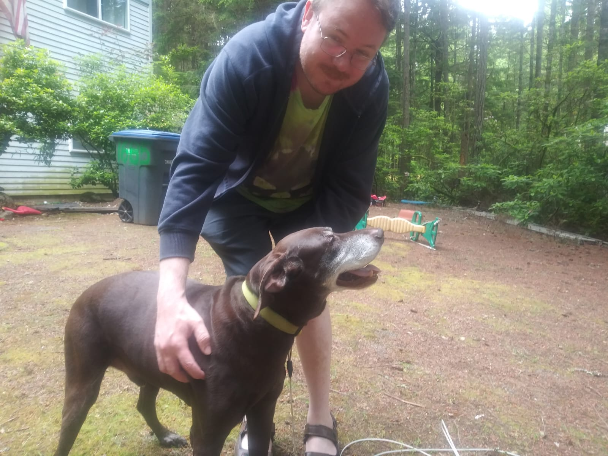

Rest in Peace Onyx and Duke, together again. 10/26/24
We adopted Duke from the Humane society in 2016. He had been surrendered to the shelter by 2 owners previous to us.
He was almost 7 years old when we brought him home. We adopted Onyx the cat and Ophelia his sister in 2021, who is
featured on the main page cuddling with Onyx. By some strange twist of fate, the people we wound up adopting the cats
from were Duke's first owners. Onyx was my daughter Willow's baby. She would carry him around and he didn't mind at all.
Onyx left us in 2023. Too soon. Duke lived to the ripe old age of 16. He almost made it to 17, but that would have been
cruel and selfish for me to keep him going when he was obviously living in a lot of pain.
